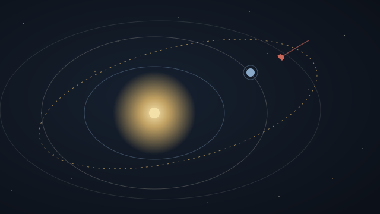

NASA and ESA Data Projects
Three ways to explore space and the Earth using real data from NASA and ESA: the rocks passing Earth this week, the weather on Mars, and the planet seen from orbit.

Asteroid Tracker
Every near-Earth asteroid passing this week, by size and distance; every close pass since 2000; the impact-risk lists of NASA and ESA side by side; and a map of the inner solar system.

Image Explorer
The Earth from orbit on any day since 2000, a globe inside the real night sky, and the picture libraries of NASA, ESA/Webb and ESA/Hubble in one search.

Mars Data
The weather measured on Mars by Curiosity since 2012 and Perseverance since 2021, cleaned and organised by season and hour, with charts anyone can read.
Everything we have out there
Active spacecraft and stations
from NASA, ESA, JAXA, ISRO, CNSA and others, from the space station to the VoyagersTwo smaller tools
Sky Finder
Point your phone at the sky to find the asteroid passing tonight, with the Moon, planets and space stations to guide you. Pin it to your home screen.
The solar system map
All 43,000 known near-Earth asteroids with the planets and spacecraft, on any date and from any angle.
Positions courtesy of NASA/JPL and CelesTrak. Data courtesy of NASA and ESA (the European Space Agency).